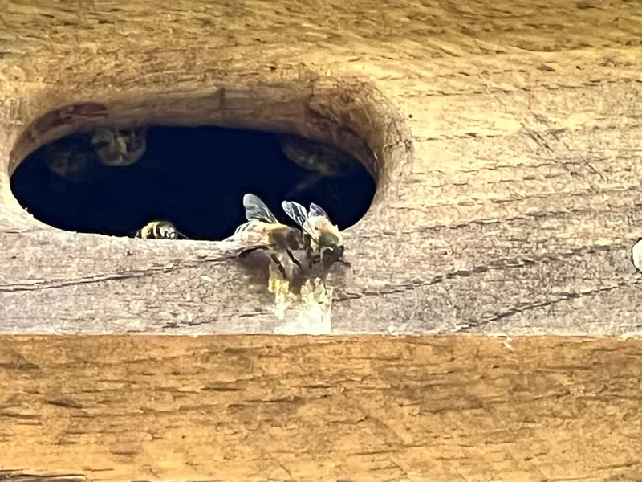
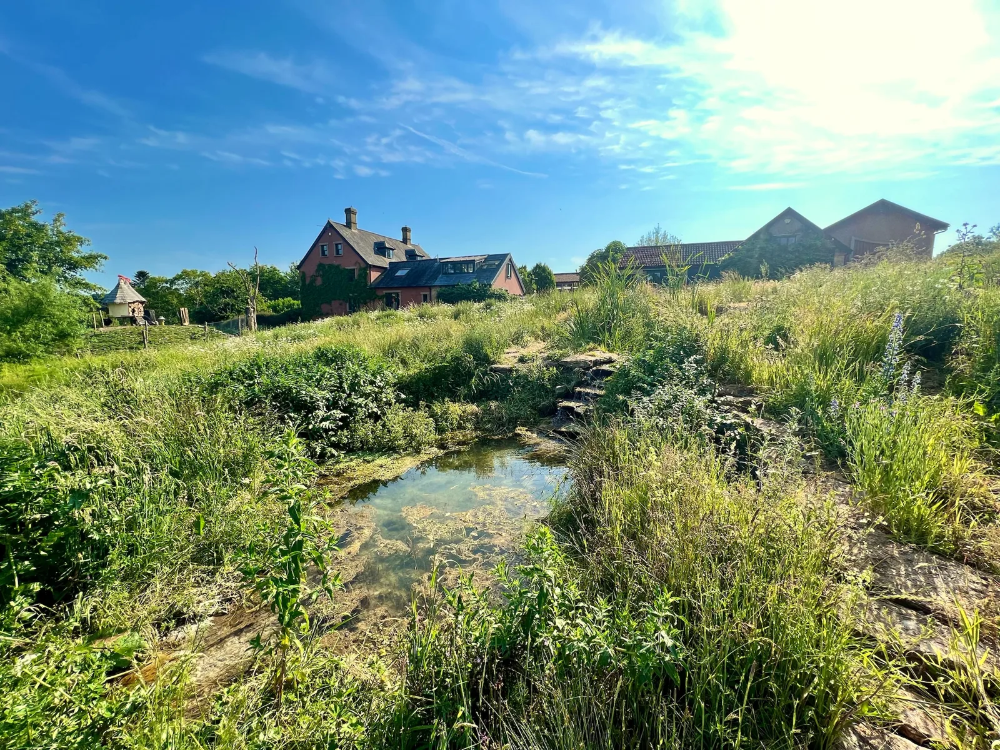
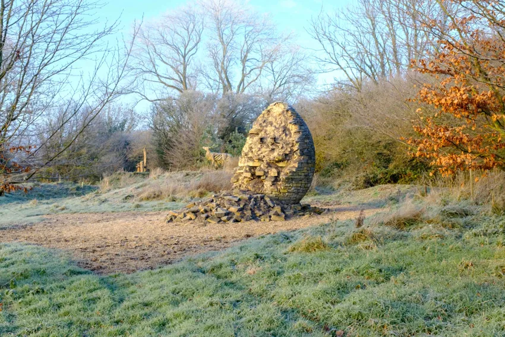
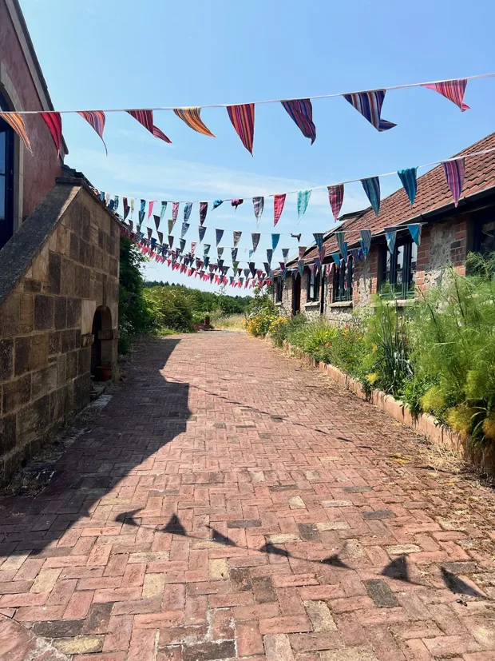

Bees in the bird boxes
The boxes were built for swifts. Starlings found them first, then a colony of honey bees took over. At times the farm team could see honey seeping through the wood.
Read the farm’s field board
Hooke, West Dorset
When environmentalist Julia Hailes and her husband Jamie Macdonald bought Hooke Farm, Julia still paid a mole catcher and put down slug pellets. A walk across their nine acres now takes you past spring-fed pools, a meadow alive with insects and the remains of a rather ambitious home for bats.
“The most exciting thing is discovering parts of our land where we’ve never been.”Julia Hailes, July 2020
In 2019, Julia began planning the wilding with help from Operation Future Hope’s Lesley Malpas and from Andrew George. Some corners of the farm were hard to reach through the nettles. The old mill pond had filled with so much silt that little open water remained.
When the diggers arrived in July 2020, the team found several springs. Working with the existing flow, they shaped a series of pools. A timber path now crosses the wet meadow. Andrew suggested the design and Joe Wood led the team that laid the oak planks on sweet chestnut stakes.
Follow the Sweet Track
One of the biggest changes was deciding which grass to cut. A large lawn had needed regular mowing. The team began cutting paths through it, mowing much of the remaining grass only a couple of times a year and leaving some patches long through winter.
Julia noticed different grasses and a wildflower called corky-fruited water-dropwort. On warm evenings in 2022 she could hear insects humming over the grass. Linnets and goldfinches came through in flocks. Small cairns made from waste stone dug out of the yard mark the route used to count butterflies.
Find the butterfly markers
The boxes were built for swifts. Starlings found them first, then a colony of honey bees took over. At times the farm team could see honey seeping through the wood.
Read the farm’s field board
Stone carver Tom Clark finished the egg in December 2021. Droppings showed that bats had visited the chamber. They never settled, and the stonework later collapsed. The farm decided to leave the ruin for wildflowers.
See the egg before and after
In June 2022, Julia and Jamie opened Hooke through the National Garden Scheme for the first Wilding Weekend. Visitors could go out with the Bumblebee Conservation Trust to identify bees, then see the moths Butterfly Conservation had collected the night before.
The following summer, Jamie led tours starting in the water meadow. Adam Gale helped lead the wilding work and gardener Rachael Moss tended a vegetable garden full of flowers. Their work gave visitors something they could try at home, even in a single bed or a strip of lawn.
The third and final Wilding Weekend took place in June 2024. The films, field boards and photographs on this portal let you follow those walks in your own time.